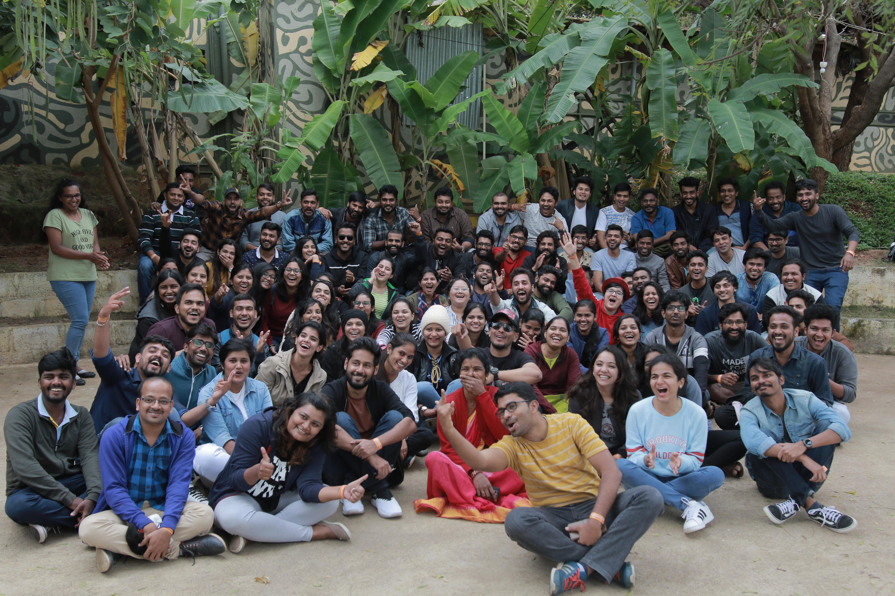

Overview
Crowdfunding can be a quick and easy way to meet unanticipated, pressing needs. Today, anyone with a smartphone can participate in making a difference with great ease. More and more people are now raising funds online to tackle emergencies more efficiently. Increasing digital access and the convenience of online payments are driving more and more Indians to take the digital route to mobilize greater support for urgent needs on time.
India’s private healthcare spending is estimated at $90 billion a year. Of this, about $60 billion is out-of-pocket: from savings, borrowings and support from friends and family. This is where crowdfunding plays a role, bridging the gap, and making it easy to both ask for and render financial assistance.
People have always turned to their friends, family and communities at a time when a significant amount of money is required to deal with urgent medical crises.
About Us
The sparks Foundation is an online crowdfunding platform that enables anyone across India to raise funds for healthcare, education, sports, disaster relief and other personal causes, with great ease. Founded in 2010 by a team of young and passionate entrepreneurs, our Foundation has pioneered the development of person to person giving in India.
What started as a platform to fund rural projects and micro entrepreneurs, is today widely utilized by Indians to raise funds from friends, family and a wider social network for medical needs, loved ones and charity. Milaap is soon becoming the go-to platform for funding cancer treatment, transplants and other critical emergencies.
What we do
The sparks Foundation addresses the many challenges of giving (such as difficulty in discovering the right causes, trust deficit, and overall donor apathy). They share stories of (pre-qualified) individuals and groups with a network of its trusted community and partners, who either specialize in providing and managing microloans to their local communities or can connect with the cause to help with a donation.